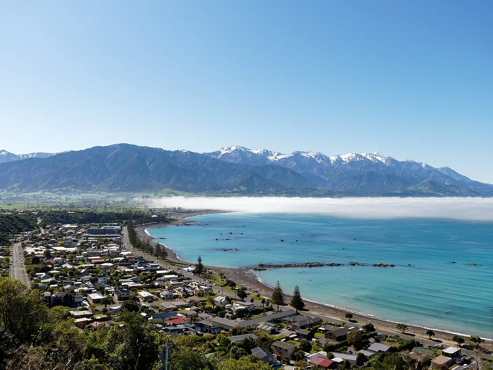

Kaikōura
Canterbury, Nouvelle-Zélande · kayak, snorkeling

Côte où les montagnes enneigées tombent dans l’océan, riche en otaries, dauphins et cachalots.
- Lieu
- Canterbury, Nouvelle-Zélande
- Niveau
- Débutant
- Activités
- kayak, snorkeling
- Type d'eau
- Mer / océan
- Coordonnées
- -42.40, 173.68 (position approximative du secteur)
Dangers à connaître
- Eau froide.
- Otaries sauvages.
Le conseil d'Ocean Buddy
Respecte une distance d’au moins 20 mètres avec les otaries.
Ouvrir dans Ocean Buddy Télécharger sur l'App Store
Source : Fiche Ocean Buddy · septembre 2026 · à vérifier localement.